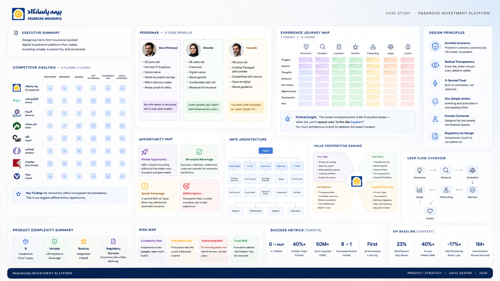
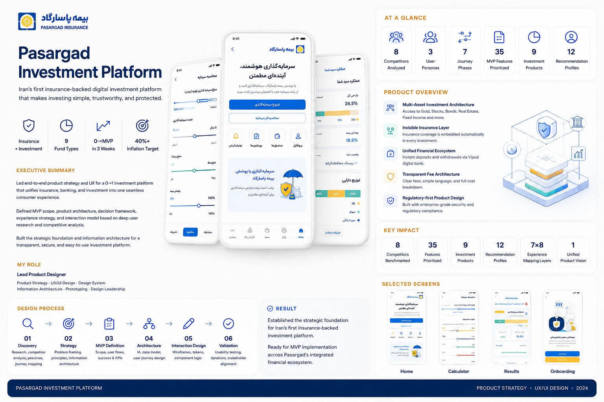

The Hook: 40%+ inflation is destroying Iranian household savings. No platform combines investment + insurance + banking. I'm defining the product strategy and architecture for the first one — building a trust framework that makes investing feel as safe as saving, with AI-augmented discovery compressing 8 weeks into 3.
Executive Summary
I'm leading the design of a consumer digital investment platform for Pasargad Insurance — a product that lets ordinary people invest in gold, silver, stocks, bonds, real estate, and fixed income funds, with life insurance embedded invisibly into every transaction.
The project exists because 40%+ annual inflation in Iran is destroying household savings, and Pasargad has a unique ecosystem advantage: a licensed bank (Vipod), an insurance company, and investment infrastructure — all under one umbrella. No competitor has all three.
I own the full design lifecycle: competitive intelligence, persona development, experience mapping, product strategy, MVP definition, information architecture, interaction design, and design system foundations — as the sole product designer.
The Context
Pasargad Insurance is one of Iran's largest insurers. Its subsidiary Vipod is a licensed digital bank. The investment arm manages multiple fund types. These three entities operate independently — but the opportunity is in connecting them into a single consumer experience.
The user context is critical: most Iranians keep savings in bank deposits earning 23% — while inflation runs at 40%+. They lose purchasing power every month. Gold has historically been the hedge, but buying physical gold has friction (trust, storage, minimum amounts). Digital gold solves these problems — but no existing platform combines investment + insurance + banking in one seamless experience.
The product complexity is significant: 9 investment fund types, each with different risk profiles, return characteristics, and regulatory requirements. Life insurance with variable coverage. Banking integration for instant deposits and withdrawals. Regulatory compliance across three financial domains (insurance, securities, banking).
The Opportunity
Why now: Competitor Karizama proved the model — 1M+ users investing in digital gold through a simple app. But Karizama has no banking license (slow withdrawals) and no insurance (no protection). Pasargad can offer 5-second identity verification via Vipod SSO, same-day withdrawals, and automatic life insurance — three structural advantages no competitor can replicate.
Why previous solutions couldn't scale: Pasargad's existing investment products were sold through agents and paper forms. The digital channel didn't exist for retail consumers. There was nothing to redesign — this was building from zero.
Business risks: If the experience is too complex, users won't trust it. If insurance feels like a "cost" rather than a benefit, it becomes a barrier. If onboarding takes more than 3 minutes, we lose the users Karizama already trained to expect simplicity.
Problem Statement
"How do we make investment + insurance feel like one simple act — not two separate financial decisions — for users who have never invested digitally and distrust financial promises?"
- Design Challenge: Make 9 fund types + variable insurance + regulatory disclosures feel simple and trustworthy — not overwhelming
- Product Challenge: Build a 0→1 product that serves conservative first-timers and sophisticated investors with the same flow
- Engineering Challenge: Integrate three backend systems (insurance, banking, investment) into a seamless frontend experience
- Business Challenge: Position insurance as a value-add, not a cost — overcoming deep cultural skepticism about life insurance
Strategic Discovery
Competitive Analysis — 8 Players, 3 Layers
Analyzed competitors across three market layers:
- Direct insurance competitors: Pasargad Life existing products, Saman Insurance, Novin Insurance — traditional, paper-heavy, no digital investment
- Digital investment apps: Karizama, Milli, Agah — simple investment but no insurance, no banking integration
- Broader fintech: International references (Acorns, Wealthsimple, Lemonade) — product patterns and trust-building strategies
Key finding: No competitor offers transparent fee breakdown. This became the biggest differentiation opportunity.
Persona Development — 3 Data-Backed Profiles
- Sina (Primary): 35, married, IT employee. Conservative. Wants to protect savings. His wife is the real decision-maker — needs "proof" that this is safe.
- Niloofar: 28, freelancer, digital-native. Wants growth. Comfortable with risk but skeptical of traditional insurance.
- Hossein: 48, existing Pasargad policyholder. Disappointed with returns on traditional insurance. Open to digital but needs handholding.
Experience Mapping
Built a complete 7-phase × 8-layer Experience Map: Awareness → Research → Evaluation → Decision → Onboarding → Usage → Loyalty. Each phase mapped with: triggers, actions, thoughts, emotions, pain points, opportunities, touchpoints, and KPIs.
Critical insight: The lowest emotional point is the Evaluation phase — when the user's spouse asks "Is this like Caspian?" (referring to a collapsed financial institution). The entire trust architecture of the product must address this moment.
Principles
These principles guided every design decision — they're product principles, not UI rules:
- Invisible Insurance: Insurance is a benefit that activates automatically — never a separate purchase decision. Users don't "buy insurance" — they invest, and protection comes included.
- Transparency as Competitive Advantage: Show the fee breakdown (94% investment / 4% insurance / 2% platform) on every screen. No competitor does this. Radical transparency builds the trust others lack.
- The Spouse Test: Every key screen must produce output shareable with a skeptical family member. If Sina can't screenshot the calculator result and convince his wife, we've failed.
- Start Small, Prove Big: ₹100K minimum (~$2). Remove the risk of the first decision. Once the first investment is made, Endowment Effect activates.
- System, Not Screens: Design the product as a modular system — every component reusable, every flow extensible. We're building infrastructure for 9 fund types, not designing 9 separate products.
Strategy
Chosen approach: Guided personalization with progressive complexity. Users answer 2 questions (goal + risk tolerance), receive a personalized package recommendation, but can customize freely.
Alternative considered: Full self-service (user picks funds manually from day one). Rejected because: Sina doesn't know what "fixed income fund" means. Choice overload with 9 fund types would cause decision paralysis (Hick's Law). Karizama succeeded precisely because they simplified to one choice.
Alternative considered: Fully automated (system decides everything). Rejected because: users need Autonomy (Self-Determination Theory). A system that decides for you feels paternalistic. Users who feel in control are more loyal.
Trade-off: The 2-question Risk Quiz sacrifices precision for completion. A 10-question assessment would be more accurate but lose 60%+ of users (NNg research: each question adds 10-15% drop-off). We optimize for good-enough personalization with near-zero friction.
Product Architecture
The product is designed as a layered system, not a collection of screens:
Layer 1: Trust Architecture
Calculator before signup (prove value before asking for commitment). Fee transparency on every screen. Regulatory badges (Central Insurance, Securities Exchange). SSO via Vipod (institutional trust transfer).
Layer 2: Personalization Engine
Risk Quiz (2 questions) → 12 profile combinations → Package recommendation algorithm → 3 packages displayed with Anchoring (recommended in center). Custom Portfolio Builder for advanced users. Guardrails: minimum 10% fixed income, maximum 45% stocks.
Layer 3: Investment Operations
Purchase flow. DCA (automatic recurring investment). Fund switching without sell/rebuy. Same-day withdrawal to Vipod account. Real-time dashboard with daily P&L.
Layer 4: Insurance Layer (Invisible)
Auto-activates on first purchase. Adjustable coverage via slider. Premium included in fee breakdown — never a separate line item. Death and disability coverage. Scales with investment amount.
Layer 5: Engagement & Growth
Smart notifications (positive-only on green days). Monthly comparison report (vs. deposit, vs. inflation). Referral program (gold rewards). New fund type launches as expansion.
Product Leadership
Strategic Discovery
Competitive analysis of 8 players across 3 market layers. 3 data-backed personas with empathy maps. Complete 7-phase experience map. Empathy maps for calculator and Risk Quiz features specifically.
Product Strategy
MVP document with 35 features across 4 priority tiers. Package recommendation algorithm (12 user profiles → personalized bundles). Feature justification mapped to experience map pain points. Invisible insurance positioning strategy.
Solution Architecture
12-step onboarding user flow. Information architecture for 9 investment types. Progressive disclosure strategy for complex financial information. Calculator interaction design (pre-signup trust tool).
Product Decisions & Execution
15 wireframe screens (HTML interactive). Landing page (mobile-first with calculator modal). Success/celebration page with motion design. Component patterns for investment-specific UI.
AI-Augmented Process
Used AI tools strategically to compress discovery timeline: competitive analysis synthesis, persona development acceleration, experience map creation, algorithm logic exploration. AI compressed 8 weeks of standard discovery into 3 — but human judgment stayed at the center of every decision.
Product Decisions & Trade-offs
| Decision | Reason | Trade-off |
|---|
| Calculator before signup | Build trust before asking for commitment | Shows potential returns without context of user's risk profile |
| 2-question Risk Quiz (not 10) | Each question = 10-15% drop-off | Less precise personalization |
| 3 packages with Anchoring | Behavioral design — center option gets most selection | Limits perceived choice |
| Invisible insurance | "Insurance = cost" mental model is deeply rooted | Users may not value what they don't see |
| ₹100K minimum | Foot-in-the-door — remove first-decision risk | Low initial revenue per user |
| Vipod SSO | 5-second verification vs. competitors' 5 minutes | Excludes non-Vipod users initially |
| Fee transparency (94/4/2) | No competitor shows this — radical differentiation | Makes the 6% non-investment visible |
| AI-augmented discovery | Sole designer — needed to move fast without sacrificing depth | AI outputs required heavy human validation |
Solution Evolution
Iteration 1: Feature-First
Initial wireframes focused on showing all 9 fund types upfront. User testing signal: overwhelming. Users didn't know where to start.
Iteration 2: Guided Personalization
Introduced Risk Quiz → Package recommendation. Reduced 9 choices to 3. Added Anchoring (center = recommended). Signal: much better comprehension, but users wanted to understand "why this package?"
Iteration 3: Transparency + Control
Added fee breakdown to every screen. Added Custom Portfolio Builder for advanced users. Added "worst case" scenario to calculator (not just optimistic). Current state — resonates with both Sina (conservative) and Niloofar (control-seeking).
Where It Stands
Progress
Discovery complete. MVP defined (35 features, 4 priority tiers). Wireframes designed (15 screens). Landing page shipped. Package algorithm documented. Experience map complete. Now entering high-fidelity design phase.
Current Wins
- AI-augmented discovery compressed 8 weeks to 3 — without sacrificing research depth
- Invisible insurance positioning validated in stakeholder review — business team aligned
- Fee transparency (94/4/2) approved as a key differentiator — no competitor offers this
- Package algorithm handles 12 user profile combinations with guardrails
Open Questions
- Will users actually share calculator results with family? (The Spouse Test — needs validation)
- How will users react to insurance slider? Will they minimize coverage to reduce cost?
- DCA adoption rate — will conservative users trust automatic recurring investment?
- Non-Vipod onboarding — how much friction is acceptable for the 5-minute flow?
Risks
- Market timing — if gold drops significantly during launch, trust in the product drops with it
- Regulatory changes — insurance or securities regulations could change the fee structure
- Engineering integration complexity — three backend systems is non-trivial
Future Validation
- Usability testing of high-fidelity prototype (planned Sprint 2)
- A/B test: calculator before vs. after signup
- 5-person user interviews focused on insurance perception
Reflection
What surprised me
The biggest insight wasn't about UI — it was that Sina is not the decision-maker. His wife is. Every trust-building feature (calculator, transparency, shareable results) exists because of this insight. I would have missed it without the experience mapping process.
What I'd challenge now
I accepted the 2-question Risk Quiz too quickly. The simplicity is right for conversion — but I'm not convinced the personalization output is meaningful enough. If I could revisit one decision, I'd explore whether a 4-question flow could preserve completion while producing meaningfully different recommendations. The current 12-profile matrix may be over-engineered for what two inputs can actually differentiate.
What remains uncertain
The invisible insurance positioning is strategically sound — but we haven't validated whether users actually perceive the protection as valuable when they can't see it. There's a real risk that users minimize the insurance slider to zero because they view the 4% as "waste." We won't know until we have real behavioral data.
How this changed my thinking
This project fundamentally changed how I think about AI as a design tool. AI didn't replace my judgment — it amplified my capacity. But every output needed human validation. The future of product design isn't AI or human — it's AI-augmented human judgment.
What This Demonstrates
This project demonstrates:
- 0→1 product ownership — building from nothing in an ambiguous, regulated domain
- Systems thinking — designing a 5-layer product architecture, not a collection of screens
- Strategic framing — reframing "investment app" as "trust-building infrastructure"
- Cross-domain complexity — insurance + banking + investment + regulatory compliance
- AI-augmented process — using AI tools strategically to compress timelines without sacrificing depth
- Honest assessment — this project is in progress, with real open questions and risks
Case Study Overview — Research, Strategy & Architecture

Product Design — Process, Impact & Selected Screens

"The hardest design problem in this product is not the interface. It's making a family feel safe putting their savings somewhere new."